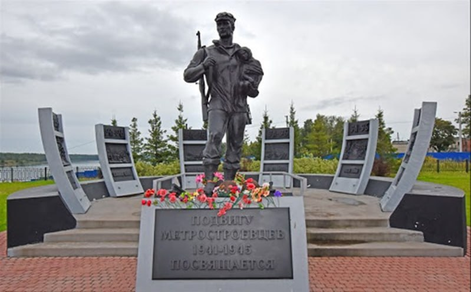
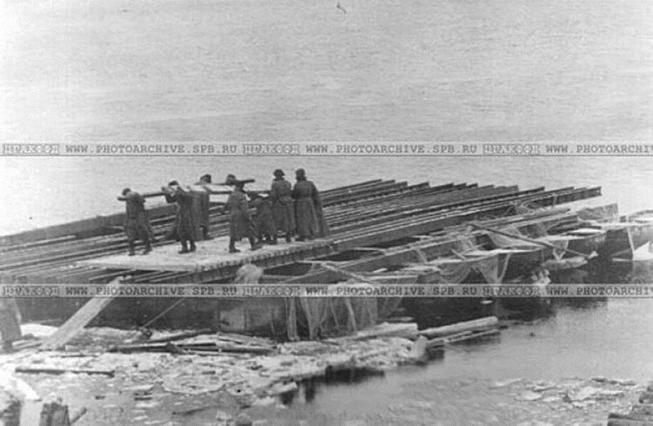

Большинство людей знает, что Ленинградский метрополитен был открыт в 1955 году. Но мало кто знает, что строить его начали еще до начала Великой Отечественной войны. А в битве за Ленинград и прорыве блокады метростроевцы сыграли одну из важных ролей. История ленинградского метростроя началась в январе 1941 года, а уже в августе метростроевцы пошли на передовую, чтобы строить километры путей, переправ и мостов. Кроме них метростроители воздвигали оборонительные рубежи: ДОТы, бойницы, окопы и другие укрепления.
Мемориал «Героям Метростроя»


Чтобы обеспечить доставку техники через Неву, надо было создать надёжную танковую переправу в районе Невской Дубровки. Командование решило переправлять танки на понтонах. Переправу начали ночью при поддержке артиллерии, которая должна была заглушить шум и отвлечь внимание врага от того места, где между двумя штабелями старых дров на берегу притаилась пристань. Начал движение первый танк Т-34. Переправа была налажена, танки прорвались к Невскому «пятачку». Эта боевая операция вошла в воен¬ную историю под кодовым названием «Чай с вареньем» – каждое утро в Смольный шли сообщения от И.В. Зубкова: «Пьём чай с вареньем по 7–8 стаканов» – каждую ночь переправлялось по 7–8 танков. В Дубровке за время проведения операции под обстрелами и бомбёжками погибла пятая часть подразделения метростроевцев. Они навечно остались на дубровской земле.